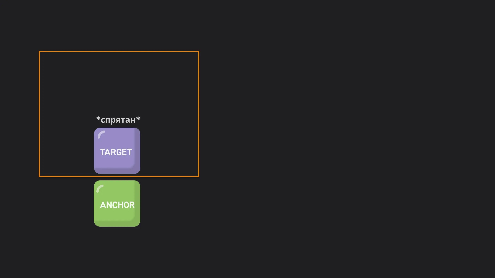

Бросаем якорь. Новая эра нативных тултипов и поповеров
Расторгуева Анна
Бросаем якорь.
Новая эра
нативных тултипов
и поповеров
Расторгуева Анна
О себе
- Фронтенд-разработчик из Сбера
- В профессии с 2019 г.
- Люблю котиков
- Люблю красивые анимашки

CSS Anchor Positioning API
Anchor
Элемент-ориентир. К нему привязываются другие
anchor-name: --my-anchor;
Target
Абсолютно позиционированный элемент, который нужно разместить
position: absolute;
position-anchor: --my-anchor;
<div class="anchor">anchor</div>
<div class="target">target</div>
.anchor {
anchor-name: --my-anchor;
}
.target {
position: absolute;
position-anchor: --my-anchor;
}
Сетка позиций
position-area
MDN

.target {
position-area: top right;
/* или */
position-area: start end;
}
.target {
position-area: center right;
/* или */
position-area: start center;
}

.target {
position-area: span-top left;
/* или */
position-area: span-start start;
}

.target {
position-area: bottom span-all;
/* или */
position-area: end span-all;
}
Контроль видимости
position-visibility
MDN

.target {
position-visibility: always;
}

.target {
position-visibility: anchors-visible;
}

.target {
position-visibility: no-overflow;
}
Умные fallbacks:
position-try-*
.target {
position-try-fallbacks: --my-custom-position,
--my-custom-position flip-block,
bottom left;
}
position-try-fallbacks:
<dashed-ident>
|| <try-tactic>
| <"position-area">
MDN
.target {
/*dashed-ident*/
position-try-fallbacks: --my-custom-position;
}
.target {
/*try-tactic*/
position-try-fallbacks: flip-block;
}
.target {
/*position-area*/
position-try-fallbacks: bottom left;
}

position-try-order:
normal |
most-width |
most-height |
most-block-size |
most-inline-size
MDN
Кастомные fallbacks
@position-try
MDN
@position-try <dashed-ident> {
<declaration-list>
}
@position-try --my-custom-position {
position-area: top left;
width: 100px;
}
.target {
position: absolute;
position-area: top right;
position-try-fallbacks: --my-custom-position, bottom left;
position-try-order: most-width;
width: 150px;
}
declaration-list
- position-area
- anchor()
- position-anchor
- anchor-size()
- anchor-center для align-self и justify-self
- Inset property
- Margin property
- Sizing property
MDN
anchor(
<anchor-name>
<anchor-side>,
<length-percentage>)
css anchor()
/* Define an anchor element */
.anchor {
anchor-name: --my-anchor;
}
/* Anchor a target element */
.target {
position: absolute;
left: anchor(--my-anchor left, 0);
}
anchor-size(
[ <anchor-element>
|| <anchor-size> ],
<length-percentage>)
anchor-size()
anchor-element
--other-anchor

anchor-size:
block |
inline |
width |
height |
self-block |
self-inline |
и другие
.target {
/* uses default anchor */
width: anchor-size(width, 20%);
height: anchor-size(--other-anchor inline-size, 100px);
}
Поддержка
- anchor-name Chrome 125+, Safari 26*
- anchor-position Chrome 125+, Safari 26*
- position-visibility Chrome 125+
- position-try-fallbacks Chrome 128+, Safari 26*
- position-try-order Chrome 125+, Safari 26*
- @position-try Chrome 125+
- anchor() Chrome 125+, Safari 26*
- anchor-size() Chrome 125+, Safari 26*
* - Preview browser support
Итоги и выводы Anchor Position API
-
Что это?
Мощнейший API для позиционирования на чистом CSS
-
Что решает?
Избавляет от тонн хрупкого JS-кода для поповеров, тултипов, меню
-
В чем преимущество?
Производительность, надежность, декларативность
-
Когда использовать?
Уже сейчас для прогрессивного улучшения в Chrome.
В будущем — как стандартный подход
Всем спасибо!
Fin